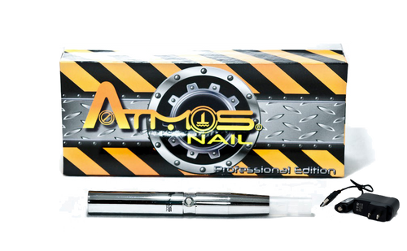

Smoke Accessories
ATMOS NAIL
The Atmos Nail vaporizer is a small portable vaporizing unit. It is manufactured by Atmos Technology, based in Florida, USA. The Nail is a versatile model that has been designed to work with a variety of oils (thin, thick, essential and waxy). Thinner liquid oils can be loaded into the nifty atomizer whereas thicker concentrated oils can be loaded directly into the reservoir tank. The innovative double air circulation system within the tank cartridge delivers a thick and tasty vapor every time.
Discretion is one of the key features with the Atmos Nail. It is a small unit that fits readily into your pocket or bag. Operation is simple, quick and convenient making this an ideal vaporizer for those who like to vape “on the move”.
The Nail also features a two part atomizer system. This means that if a part of the system should need replacing you will only have to replace one piece rather than the whole unit, making it easier and more cost effective.
Atmos have covered all the bases with this one and rounded it off by supplying a very good quality battery that will give hours of continuous use with a full charge.
Return Policy
All SALES ARE FINAL
NO REFUNDS